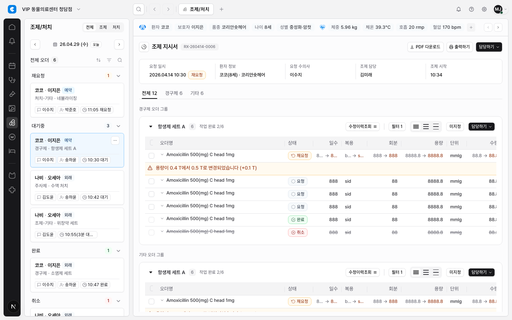

DEN-264 Shared Table Header/Cell Text Primitive Pilot
요약
DEN-250/251 조사 결과를 실제 코드로 옮기는 첫 구현 slice로, 테이블 헤더 interaction 역할과 셀 텍스트 줄바꿈 정책을 shared primitive로 만들고 조제/처치 테이블에만 pilot 적용했다.
전체 테이블에 한 번에 확장하지 않고, 업무량이 많고 컬럼이 복잡한 조제/처치 화면에서 먼저 검증할 수 있게 범위를 제한했다.
변경 내용
EmrTableHeaderCell을 추가해 header interaction role, resize policy, future sort/filter/menu trigger API를 한 곳에 모았다.EmrTableCellText를 추가해 기본 1행, 제한적 2행 preview, full-on-demand 같은 텍스트 표시 모드를 shared API로 정리했다.- 조제/처치 order table에서 오더명과 warning/change message만
two-line-if-long으로 허용했다. - 일수, 회분, 용량, 수량 등 scalar 값은 1행 표시를 유지했다.
- checkbox, 담당 select, 작업 action 컬럼은 resize 대상에서 제외했다.
Evidence
mock auth storage state를 넣고 /w/clair-demo/dispensing?modulePanel=open&aside=closed&right=closed를 캡처했다. 로그인 화면이 아니라 실제 조제/처치 workspace가 evidence에 들어갔다.

검증 결과
npm run lint: 통과. 기존 경고 5개는 이번 변경 범위 밖이다.npx tsc --noEmit: 통과.npx playwright test tests/app-shell.spec.ts -g "dispensing table (supports hover selection|column grips resize)": 2개 통과.- Browser QA: 로그인 문구 0개, 실제 table visible, select/assignee/workStatus resize handle 0개, status resize handle visible.
범위 제외와 다음 단계
- 실제 sort/filter/menu 동작은 구현하지 않았다. 이번 작업은 API와 pilot UI 적용까지다.
- 전체 테이블 일괄 적용은 제외했다.
- Supabase, DB, RLS, server enforcement, live persistence는 건드리지 않았다.
- 다음 단계는 이 pilot을 검토한 뒤 chart/order 또는 billing처럼 risk가 높은 테이블에 별도 PR-sized issue로 확장하는 것이다.